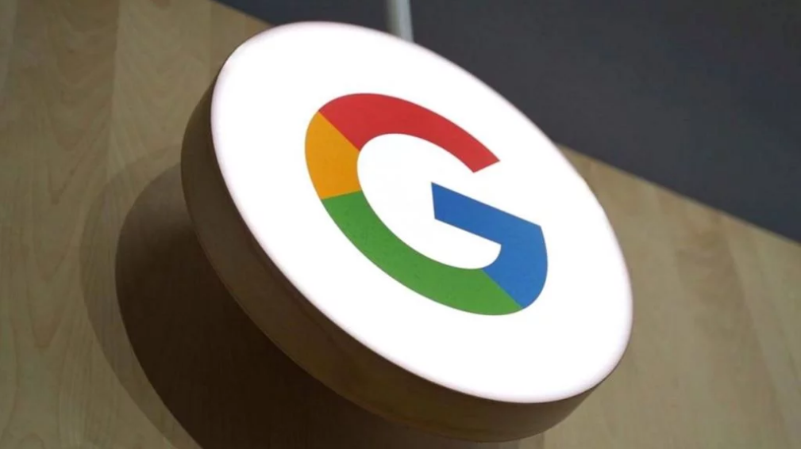

De acordo com a lei, é necessário que sites, aplicativos e plataformas digitais que coletam dados de jovens usuários publiquem uma política de privacidade para o consentimento dos pais, dando a eles a opção compartilhar ou não as informações de seus filhos com terceiros. O processo acusa o Google de deliberadamente enganar as escolas e os pais em relação às políticas de dados. "O Google tem feito declarações e promessas públicas projetadas para convencer pais, professores e funcionários da escola de que leva a sério a privacidade dos alunos e que apenas coleta dados relacionados à educação de estudantes que usam sua plataforma", diz o processo, acrescentando que o Google também fez promessas públicas de não extrair dados de alunos para fins comerciais. Promessas estas que, de acordo com as acusações, não foram cumpridas. Em vez disso, "o Google usou o Google Education para espionar crianças e suas famílias do Novo México", coletando informações pessoais para fins publicitários, de acordo com as acusações. |
| 
|
| Os tipos de dados coletados das crianças, conforme consta no processo, incluem informações confidenciais como geolocalização, histórico de navegação, históricos de pesquisa, históricos de visualização, listas de contatos, senhas salvas e até gravações de voz. "Rastrear dados de alunos sem o consentimento dos pais não é apenas ilegal, é perigoso", disse Balderas em comunicado anunciando o processo.
Por outro lado, o Google afirmou que as alegações do estado estão erradas, e que permite que as escolas controlem o acesso, buscando ainda o consentimento dos pais. "Não usamos informações pessoais de usuários de escolas primárias e secundárias para segmentar anúncios", disse um porta-voz da empresa ao portal Ars Technica. |